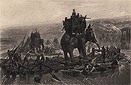
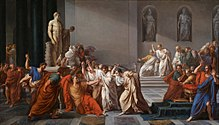

Roma, atual capital da Itália, é o centro de onde emergiu um dos mais extensos impérios constituídos durante a Antiguidade. Fixada na porção central da Península Itálica,
esta cidade foi criada no século VIII a.C. e contou com diferentes influências culturais e étnicas. Antes de falarmos sobre a criação da civilização romana, devemos assinalar
os diversos povos que contribuíram para a sua origem. Entre estes, destacamos os etruscos, úmbrios, latinos, sabinos, samnitas e gregos.
Antes da criação da cidade de Roma, os etruscos se destacavam como uma das principais civilizações da porção central da Península Itálica. Os territórios etruscos alcançavam
porções do Lácio e da Campanha. Cerca de doze centros urbanos eram ali distribuídos, estabelecendo uma economia bastante estruturada em razão das intensas atividades comerciais.
Esse desenvolvimento se deu também em virtude das boas relações firmadas com os fenícios, fixados na porção norte do continente africano.
Origem mitológica
A criação de Roma é conhecidamente marcada pela lenda envolvendo os irmãos Rômulo e Remo. Segundo a história descrita na obra Eneida, do poeta Virgilio, o povo romano é
descendente do herói troiano Eneias. Sua fuga para a Península Itálica se deu em função da destruição da cidade de Troia, invadida pelos gregos em 1400 a.C.. Após sua chegada,
criou uma nova cidade chamada Lavínio. Tempos depois, seu filho Ascânio criou o reino de Alba Longa.
Neste reino ocorreu o enlace entre o deus Marte e a princesa Rea Sílvia, filha do rei Numitor. O envolvimento da princesa com a divindade deu origem aos gêmeos Rômulo e Remo,
que deveriam ter direito de reinar sobre Alba Longa. No entanto, o ambicioso Amúlio arquitetou um plano para tomar o governo e, por isso, decidiu lançar as duas crianças às
margens do rio Tibre. Rômulo e Remo sobreviveram graças aos cuidados de uma loba que os amamentou e os entregou à proteção de uma família camponesa.
Quando chegaram à idade adulta, os irmãos retornaram para Alba Longa e destituíram Amúlio, logo em seguida decidiram criar a cidade de Roma. Rômulo, que tinha o favor dos
deuses, traçou o local onde seriam feitas as primeiras obras da cidade. Inconformado com a decisão do irmão, Remo saltou sobre a marca feita por Rômulo. Em resposta, Rômulo
acabou assassinando Remo, tornando-se o primeiro monarca da história de Roma.
Origem histórica
Essa explicação mítica é contraposta às pesquisas históricas e arqueológicas que apontam uma hipótese menos heroica sobre as origens de Roma. Segundo especialistas, a
fundação de Roma ocorreu a partir da construção de uma fortificação criada pelos latinos e sabinos. Esses dois povos tomaram tal iniciativa, pois resistiam às incursões
militares feitas pelos etruscos. No entanto, os mesmos etruscos vieram a dominar a região no século VII a.C.. A partir da fixação desses povos, compreende-se historicamente
o início da civilização romana.
A documentação do período monárquico de Roma encontrada até hoje é muito precária, o que torna este período menos conhecido que os períodos posteriores. Várias dessas
anotações registram a sucessão de sete reis, começando com Rômulo em 753 a.C., como representado nas obras de Virgílio (Eneida) e Tito Lívio (História de Roma). A região
do Lácio foi habitada por vários povos. Além dos latinos, os etruscos tiveram um papel importante na história da monarquia de Roma, já que vários dos reis tinham origem etrusca.
O último rei de Roma teria sido Tarquínio, o Soberbo (r. 534–509 a.C.) que, em razão de seu desejo de reduzir a importância do senado na vida política romana, acabou sendo
expulso da cidade e também assassinado. Este foi o fim da monarquia em Roma. Durante esse período, o monarca (rei) acumulava os poderes executivo, judicial e religioso, e era
auxiliado pelo senado, ou conselho de anciãos, que detinha o poder legislativo e de veto, decidindo aprovar, ou não, as leis criadas pelo rei.
De acordo com a tradição e escritores posteriores como Tito Lívio, a República Romana foi fundada por volta de 509 a.C., quando o último dos sete reis de Roma, Tarquínio,
o Soberbo, foi deposto por Lúcio Júnio Bruto e um sistema baseado em magistrados eleitos anualmente e em várias assembleias representativas foi estabelecido.
Uma constituição estabeleceu uma série de pesos e contrapesos e a separação de poderes. Os magistrados mais importantes eram os dois cônsules, que juntos exerciam autoridade
executiva, como o imperium, ou o comando militar. Os cônsules tiveram que trabalhar com o senado, que inicialmente era um conselho consultivo da nobreza, ou patrícios, mas
cresceu em tamanho e poder.
Outros magistrados da república incluem tribunos, questores, edis, pretores e censores. As magistraturas eram originalmente restritas a patrícios, mas depois foram abertas
para pessoas comuns ou plebeus. Assembleias republicanas de votação incluíam a assembleia das centúrias, que votava sobre assuntos de guerra e paz e elegia homens para os
cargos mais importantes, e a assembleia tribal, que elegia cargos menos importantes.
No século IV a.C., Roma havia sido atacada pelos gauleses, que agora estendiam seu poder na península Itálica além do vale do Pó e através da Etrúria. Em 16 de julho de 390 a.C.,
um exército gaulês sob a liderança de um chefe tribal chamado Breno encontrou os romanos às margens do rio Ália, a apenas 16 quilômetros ao norte de Roma. Breno derrotou os
romanos e os gauleses marcharam diretamente para a cidade de Roma. A maioria dos romanos tinha fugido, mas alguns se trancaram no Capitólio para uma última resistência. Os
gauleses saquearam e incendiaram a cidade, depois cercaram o monte Capitolino.
O cerco durou sete meses, os gauleses concordaram em dar paz aos romanos em troca de 1.000 libras de ouro. Segundo uma lenda posterior, os romanos que supervisionavam a pesagem
notaram que os gauleses estavam usando falsas escamas. Os romanos pegaram em armas e derrotaram os gauleses; seu general vitorioso, Marco Fúrio Camilo, comentou: "Com ferro, não
com ouro, Roma compra sua liberdade".
Os romanos gradualmente subjugaram os outros povos na península Itálica, incluindo os etruscos. A última ameaça à hegemonia romana na Itália veio quando Tarentum, uma
importante colônia grega, recrutou a ajuda de Pirro de Épiro em 281 a.C., mas este esforço também fracassou. Os romanos garantiram suas conquistas fundando colônias
romanas em áreas estratégicas, estabelecendo assim um controle estável sobre a região da Itália que já haviam conquistado.
No século III a.C., Roma enfrentou um novo e formidável adversário: Cartago, uma rica e próspera cidade fenícia que pretendia dominar a região do mar Mediterrâneo.
As duas cidades eram aliadas nos tempos de Pirro, que era uma ameaça para ambas, mas com a hegemonia de Roma na Itália continental e a talassocracia cartaginesa,
essas cidades se tornaram as duas maiores potências no Mediterrâneo Ocidental e sua disputa pela região levou ao conflito. A Primeira Guerra Púnica começou em 264 a.C.,
quando a cidade de Messana pediu a ajuda de Cartago em seus conflitos com Hierão II de Siracusa. Após a intercessão cartaginesa, Messana pediu a Roma para expulsar os
cartagineses. Roma entrou nessa guerra porque Siracusa e Messana estavam muito próximas das recém-conquistadas cidades gregas do sul da Itália e Cartago agora podia fazer
uma ofensiva através do território romano; junto com isto, Roma poderia estender seu domínio sobre a Sicília. Embora os romanos tivessem experiência em batalhas
terrestres, para derrotar este novo inimigo, batalhas navais eram necessárias. Cartago era uma potência marítima e a falta de navios de experiência naval entre os romanos
tornariam o caminho da vitória longo e difícil para a República Romana. Apesar disto, depois de mais de 20 anos de guerra, Roma derrotou Cartago e um tratado de paz foi
assinado. Entre as razões para a Segunda Guerra Púnica estavam as reparações de guerra subsequentes em que Cartago aceitou no final da Primeira Guerra Púnica.
A Segunda Guerra Púnica começou com a audaciosa invasão da Hispânia por Aníbal, o general cartaginês que liderara as operações na Sicília na Primeira Guerra Púnica. Aníbal,
filho de Amílcar Barca, rapidamente marchou através da Hispânia para os Alpes italianos, causando pânico entre os aliados italianos de Roma. A melhor maneira encontrada para
derrotar o propósito de Aníbal de causar os italianos a abandonar Roma foi para atrasar os cartagineses com uma guerra de atrito, uma estratégia proposta por Fábio Máximo,
que seria apelidado Cunctator ( "retardado", em latim). Devido a isso, o objetivo de Aníbal foi inalterado: ele não poderia fazer com que cidades itálicas em número suficiente
se revoltassem contra Roma e reabastecer seu exército cada vez menor, sendo assim, ele não tinha as máquinas e os recursos humanos para sitiar Roma. Ainda assim, a invasão de
Aníbal durou mais de 16 anos, devastando a Itália. Finalmente, quando os romanos perceberam que os suprimentos de Aníbal estavam acabando, eles enviaram Cipião Africano, que
havia derrotado o irmão de Aníbal, Asdrúbal, na Hispânia, para invadir o interior cartaginês desprotegido e forçar Aníbal a voltar para defender Cartago. O resultado foi o
final da Segunda Guerra Púnica pela famosa e decisiva Batalha de Zama, em outubro de 202 a.C., que deu a Cipião seu agnome Africano. A grande custo, Roma obteve ganhos
significativos: a conquista da Hispânia por Cipião e de Siracusa, o último reino grego na Sicília, por Marcelo.
Quando em 151 a.C., a Numídia, um Estado cliente de Roma, invadiu Cartago, a cidade pediu intercessão romana. Embaixadores foram enviados para Cartago, entre eles Marco Pórcio
Catão, que depois de ver que Cartago poderia voltar a recuperar sua importância política e militar, passou a terminar todos os seus discursos, não importa qual assunto fosse,
dizendo: Ceterum censeo Carthaginem esse delendam ("Além disso, acho que Cartago deve ser destruída"). Como Cartago lutou contra a Numídia sem o consentimento romano, a Terceira
Guerra Púnica começou quando Roma declarou guerra em 149 a.C.. Cartago resistiu bem no primeiro ataque, com a participação de todos os habitantes da cidade. No entanto, ela não
suportou ao ataque de Cipião Emiliano, que destruiu inteiramente a cidade e suas muralhas, escravizou e vendeu todos os cidadãos e ganhou o controle daquela região, que se tornou
a província da África Proconsular. Todas essas guerras resultaram nas primeiras conquistas ultramarinas de Roma (Sicília, Hispânia e África) e a ascensão de Roma como uma
potência imperial significativa, o que deu início ao fim da democracia.

Aníbal e seus homens cruzando o rio Ródano.
Depois de derrotar os impérios Macedônio e Selêucida no século II a.C., os romanos se tornaram o povo dominante do mar Mediterrâneo. A conquista dos reinos helenísticos
aproximou as culturas romana e grega e a elite romana, antes rural, tornou-se luxuosa e cosmopolita. Naquela época, Roma era um império consolidado na visão militar e não
tinha grandes inimigos. O domínio estrangeiro levou a conflitos internos. Os senadores ficam ricos às custas das províncias; os soldados, na maioria agricultores de pequena
escala, estavam fora de casa por mais tempo e não podiam manter suas terras; e o aumento da dependência de escravos estrangeiros e o crescimento dos latifúndios reduziram a
disponibilidade de trabalho remunerado.
A renda do espólio de guerra, o mercantilismo nas novas províncias e a criação de impostos criaram novas oportunidades econômicas para os ricos, formando uma nova classe de
comerciantes, chamada de ordem equestre. A lex Claudia proibiu os membros do senado de se engajarem no comércio e, apesar dos equestres teoricamente poderem se juntar ao
senado, eles eram severamente restringidos do poder político. Gangues violentas de desempregados urbanos, controladas por senadores rivais, intimidavam o eleitorado
por meio da violência. A situação chegou ao auge no final do século II a.C. sob os irmãos Gracos, um par de tribunos que tentaram aprovar uma legislação de reforma agrária que
redistribuiria as principais propriedades patrícias entre os plebeus. Ambos os irmãos foram mortos e o Senado aprovou reformas revertendo as ações deles.
Em meados do século I a.C., a política romana estava inquieta. As divisões políticas em Roma eram identificadas em dois grupos, populares (que esperavam o apoio do povo) e os
optimates (os "melhores", que queriam manter o controle aristocrático exclusivo). Sula derrubou todos os líderes populistas e suas reformas constitucionais removeram poderes
(como os do tribuno da plebe) que apoiaram abordagens populistas. Enquanto isso, os estresses social e econômico continuaram a crescer; Roma havia se tornado uma metrópole
com uma aristocracia super-rica, aspirantes endividados e um grande proletariado, frequentemente de fazendeiros empobrecidos. Os últimos grupos apoiaram a Conspiração Catilinária
- um fracasso retumbante, já que o cônsul Marco Túlio Cícero rapidamente prendeu e executou os principais líderes da conspiração.
Sobre esta cena turbulenta surgiu Caio Júlio César, de uma família aristocrática de riqueza limitada. Sua tia Júlia era a esposa de Caio Mário e César identificou-se com os
populares. Para alcançar o poder, César reconciliou os dois homens mais poderosos de Roma: Marco Licínio Crasso, que financiara grande parte de sua carreira anterior, e o rival
de Crasso, Gneu Pompeu Magno (ou Pompeu), com quem sua filha se casou. Ele os formou em uma nova aliança informal, que incluía ele mesmo e era chamada de Primeiro Triunvirato
("três homens"). Isso satisfez os interesses de todos os três: Crasso, o homem mais rico de Roma, tornou-se ainda mais rico e finalmente alcançou o alto comando militar; Pompeu
passou a exercer mais influência no senado; e César obteve o consulado e o comando militar na Gália. Enquanto pudessem concordar, os três eram os governantes de fato de Roma.
Em 54 a.C., a filha de César, esposa de Pompeu, morreu no parto, desvendando um elo da aliança. Em 53 a.C., Crasso invadiu o Império Arsácida e foi morto na Batalha de Carras. O triunvirato desintegrou-se com a morte de Crasso, que atuava como mediador entre César e Pompeu. Sem ele, os dois generais passaram a atacar um ao outro pelo poder. César conquistou a Gália, obtendo imensa riqueza, respeito em Roma e a lealdade de legiões endurecidas pela batalha. Ele também se tornou uma clara ameaça para Pompeu e era detestado por muitos optimates. Confiante de que César poderia ser impedido por meios legais, o partido de Pompeu tentou tirar de César suas legiões, um prelúdio para o julgamento, o empobrecimento e o exílio de César.
Para evitar esse destino, César atravessou o rio Rubicão e invadiu Roma em 49 a.C.. Pompeu e seu grupo fugiram da Itália, perseguidos por César. A Batalha de Farsalos foi uma brilhante vitória para César e nesta e em outras campanhas ele destruiu todos os líderes dos optimates: Metelo Cipião, Catão, o Jovem, e o filho de Pompeu, Cneu Pompeu. Pompeu foi assassinado no Egito em 48 a.C.. César era agora dominante sobre Roma, o que atraiu a amarga inimizade de muitos aristocratas. Ele recebeu muitos cargos e honras. Em apenas cinco anos, ele obteve quatro consulados, duas ditaduras comuns e duas ditaduras especiais: uma por dez anos e outra pela perpetuidade. Ele foi assassinado em 44 a.C., nos idos de março pelos Liberatores.

A morte de César
No ano de 44 a.C., uma conspiração contra Júlio César acabou estabelecendo o fim da ditadura que colocara a manutenção da República em xeque. Mesmo com a vitória, os opositores de Júlio César não foram os que tomaram o poder após a deflagração de seu assassinato. Sob a liderança do general Marco Antônio, a população romana se voltou contra os conspiradores. Acuados, eles tentaram buscar refúgio em territórios colonizados por Roma.
Desse modo, o general Marco Antonio, antigo aliado militar de Julio César; Caio Otávio, sobrinho de Júlio César; e Lépido, um dos mais ricos banqueiros de todo o mundo romano, se uniram para formar o Segundo Triunvirato. Estabelecido com o objetivo de equilibrar as forças políticas em Roma, esse novo governo determinou a divisão dos domínios romanos em três grandes regiões: a África e a Sicília ficaram por conta de Otávio; Marco Antônio com a Gália e a Cisalpina; e Lépido comandaria a Península Ibérica e a Gália Narbonesa.
Essa primeira divisão acabou durando pouco tempo, tendo em vista que o novo expurgo determinou o impedimento de dois mil cavaleiros e cento e trinta senadores. Além disso, os principais opositores de Julio César foram violentamente cassados e mortos por conta de sua afronta ao poder político centralizado romano. No ano de 40 a.C., uma nova divisão territorial determinou que Lépido dominasse a África; Otávio, as terras ocidentais; e Marco Antônio, o Oriente. As terras da Península Itálica seriam dadas como território neutro.
Reconhecendo em Marco Antônio o seu mais importante rival, Otávio forçou o mesmo a jurar fidelidade ao seu governo oferecendo a mão de sua irmã para o general. Com o casamento com Otávia, Marco Antônio passaria a integrar a própria família de seu companheiro no triunvirato. No entanto, quebrando essa aliança, Marco Antônio se separou da esposa em 36 a.C. para então se casar com a rainha egípcia Cleópatra.
Ameaçado com essa situação, Otávio logo descobriu que o general Marco Antônio tinha intenções de deixar Cleópatra como herdeira de seu cargo político e Cesárion, seu filho com a rainha egípcia, como regente do governo de Roma. Usando do testamento de Marco Antônio como prova, Otávio recebeu o apoio necessário para perseguir o general e a rainha egípcia. Chegando ao Egito, acabou realizando uma enorme conquista territorial e formou um grande espólio extraído dos suntuosos palácios egípcios.
Nessa conquista, preferindo escapar da fúria de Otávio, Marco Antônio e Cleópatra cometeram suicídio. Voltando para a capital do império, Otávio foi consagrado como fiel e legitimo defensor do povo romano. Mesmo preservando algumas das instituições republicanas, a vitória de Otávio foi o primeiro passo para que o Triunvirato fosse extinto e o império fosse o grande regime político romano.
No sistema político de império, o poder político estava concentrado na figura do imperador. O Império Romano começou com Otaviano Augusto e terminou com Constantino XI. O Senado servia para apoiar o poder político do imperador.
O império sucedeu a República Romana. Com o novo sistema, Roma, que era uma cidade-estado, passou a ser governada pelo imperador.
Foi em seu início que o império conquistou a maior parte do poder. Até 117 d.C., ao menos 6 milhões de quilômetros quadrados estavam sob o domínio do império romano.
Sob o domínio do Império Romano estavam 6 milhões de habitantes. Roma, nessa fase, foi habitada por 1 milhão de habitantes.
Entre os pontos fundamentais para o sucesso do império estava o exército, que era profissional e atuava como uma legião. Sob o comando de astutos generais, Roma expandiu o poderio ao Mediterrâneo.
Características
• Essencialmente comercial
• Escravizava os povos conquistados
• O controle das províncias era feito por Roma
• Politeísta
• O governante tinha cargo vitalício
• A extensão era obtida por conquistas ou golpes militares
O Império Romano do Oriente ou Império Bizantino, perdurou até 1453, quando foi tomado pelos turcos. Bizâncio, a capital, também era conhecida como Constantinopla.
No decorrer do século VI, o imperador Justiniano (527-565) tentou reordenar o Império Romano e abriu frentes de batalhas conquistando o Norte da África, a Península Itálica e a Península Ibérica.
Os muçulmanos, contudo, terminaram por ocupar o Norte da África, o Médio Oriente e a Península Ibérica nos séculos VII e VIII.
As principais causas do declínio do Império Romano foram:
• Dificuldade de administração: o império era muito grande e havia complicações para controle da gestão e da corrupção que o assolou;
• Invasões bárbaras: o exército precisou proteger o império das investidas de godos (visigodos e ostrogodos), hunos e germânicos (como os francos, anglos, saxões, vândalos, bretões e burgúndios);
• Elevados impostos: o estado tinha elevado custo para manter a construção de pontes, aquedutos, estádios e banhos públicos. Esse fator elevou significativamente os impostos cobrados da população;
• Religião: a expansão do cristianismo, que não admitia outros deuses, está entre as justificativas para a crise no império;
• Escassez de escravos: a redução das batalhas por conquistas de novos territórios prejudicou o sistema de renovação de escravos.